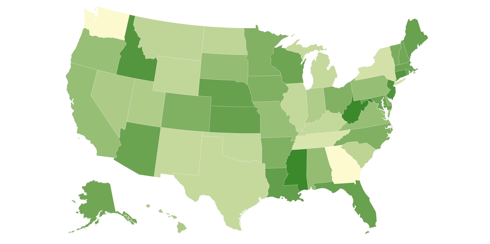

## EMPTY VERSION
# library(____) ## Data Extraction --- E
# library(____) ## Data Extraction --- E
# library(____) ## Data Transformation --- T
# library(____) ## Data Visualization --- VSession 1: Introduction To Extraction Workshop - HTML & APIs
Session 1: Introduction to Data Extraction
Part 0. Workshop Logistics
How We’ll Work Together
Interactive Format: This workshop is designed to be interactive, with a mix of short lectures followed by hands-on activities.
Questions Are Highly Encouraged: Curiosity is key to learning, so please ask anything that comes to mind. To keep us on track and ensure all topics are covered, we’ll handle questions as follows:
If your question is about a topic we will get to later, I’ll make a note of it and we will address it when we reach that section.
If a question is beyond the scope of this particular workshop, I’ll let you know, and we can discuss it after the session.
Our Technical Setup
Platform: All of our work today will be done within the CourseKata platform. This environment is pre-configured to ensure everything runs smoothly for everyone.
Packages and Libraries: The platform comes with almost all required R packages pre-installed. We will only need to install one package before we need it, and I will guide you through that simple process.
Fill-in-the-Blank Exercises: Our coding activities use a “fill-in-the-blank” style. The goal is to help you focus on the core concepts without getting bogged down by minor syntax details.
Clear Function Calls: For maximum clarity, we will explicitly name all arguments in function calls (e.g.,
read_html(url = my_url)). This makes it easy to see exactly what each part of the function is doing.
Part 1. Goals & Objectives (Entire workshop)
Session 1: Introduction
Understand the importance of extracting dynamic data (via HTML and APIs) in modern data analysis and teaching
Session 2: Getting Weather Data via OpenWeather API
In this session, we dive into OpenWeather API and learn to use packages like httr2 to execute API calls. We will also discuss URLs, queries, data structures, and more.
Session 3: Scraping NFL Sports Data
In this session, we will use Pro-Football Reference to learn how to extract and clean HTML table data for use in statistical analysis and visualizations.
Session 4: Putting it All Together (Project)
In this project, we will use HTML scraping joined with the OpenWeather API to create our own cloropleth map of Iowa.

1.a. Goals for Introduction
Analyzed static player statistics by loading an Excel file into R to filter the data and create a comparative boxplot.
Introduced dynamic data extraction by explaining how to use web APIs to send a request containing a query for structured JSON data from external servers.
Demonstrated web scraping by using an R package to directly extract a data table from an HTML webpage that can be used with dynamic data.
Advocated for a modern educational approach that teaches students to actively find and extract live data rather than passively using clean, static files.
Part 2. Conceptual Foundation
1. Traditional Approach
My mentor, Allan, says “ask good questions”…
Statistical Question: Who had the most impactful first season in terms of points: Michael Jordan, LeBron James, or Kobe Bryant?
Let’s answer this question.
We’ll begin by working with a static excel file, named
nba_data.xlsx, that contains per-game stats for each player’s 15 seasons in the NBA.
Step 1. Fill in the code based common tidyverse packages.
Step 2. Complete the appropriate function name and fill in the file name into below.
## EMPTY VERSION
# file_path <- here("sessions", "____","____","____")
# nba_df <- read_*("____", sheet = "modern_nba_legends_08302019")- Let’s view the data …
Step 3. Use the glimpse function to view the data
## EMPTY VERSION####———————
Q1.
First, take a moment to look over the data yourself. Then, discuss with your peers if you see any issues that need cleaning.
####———————
Step 4. Use the filter() function to select only the rows where the Season column is equal to “season_1”.
## EMPTY VERSION
# season_1_df <- nba_df %>%
# ___( _____ == "season_1")- Now lets look at a plot of their points to answer the statistical question
Step 5. Pipe the season_1_df data into ggplot, map the Name column to the x-axis and PTS to the y-axis, and then add a geom_boxplot() layer to visualize the data.
## EMPTY VERSION
# ____ %>%
# ggplot(aes(x = ____, y = ____)) +
# geom_*() +
# theme_bw()####———————
Q2.
What conclusions could be made about this plot?
####———————
Are there only 3 players that only played in the NBA?
- Now what about, Magic Johnson or Wilt Chamberlain (historic players)

- Maybe Luka Dončić or Ja Morant (more recent players)

- If I wanted to add this data I need to go to the original source not an excel sheet to do this
2. Active Data Extraction
A New Mindset
Shift students from passive data users to active data seekers.
Move beyond “waiting for clean data” to learning how to access, validate, and clean it.
Teach both the skill to extract and the capacity to teach extraction.

3. Why This Matters Now - The Evolving Data Landscape
The digital world is not static: Websites, APIs, and file structures constantly change.
Dynamic data is everywhere: The availability of real-time data has grown exponentially, demanding new teaching strategies.
Most courses haven’t caught up: Introductory statistics and data science courses still rely heavily on static files, limiting students’ exposure to modern data work.

####———————
Q3.
(Discussion): How does teaching students to extract their own dynamic data better prepare them for real-world data science careers compared to only providing them with clean, static datasets?
####———————
4. Static and Dynamic Sources of Data Extraction
2.a. Static Files or Sources Extraction
Examples: CSV, Excel files
Typically unchanging unless manually edited
Often pre-loaded into classroom activities
May still require cleaning (e.g., column names, missing data)
Messy data is not always a bad thing
2.b. Dynamic Sources Extraction
Definition: Data sources that update over time or are externally controlled (i.e., you don’t own the source)
Two primary types:
- Application Programming Interface APIs – Designed to serve structured data upon request (e.g., player stats, weather)
- Hypertext Markup Language HTML/Web Pages – Seen as dynamic when content changes (especially sports, news, etc.)

HTML pages are primarily designed for human readability, while APIs are designed for structured machine access. Both offer pathways to dynamic data, each with different advantages and challenges.
Bridging the gap between classroom exercises and real-world data practice requires that students learn not just how to analyze data — but how to find it, extract it, and prepare it themselves.
####———————
Q4.
(Open-Ended): The section above presents two main types of dynamic data sources: APIs and HTML web pages. Given that APIs are designed for machines and HTML is for humans, why would a data analyst generally prefer to use an API if one is available? What specific problems might you avoid by using an API instead of scraping a webpage?
####———————
5. What are Web APIs?
There are many kinds of APIs, but in this workshop, we’ll focus specifically on web APIs — tools designed to let us request and retrieve data from online sources.
In R, we’ll act like a piece of software making those requests, allowing us to query live data programmatically.

API stand for Application Programming Interfaces
It is a way for software to communicate with one another
One way it work is that it allow programs to request a query from a data base directly from external servers in a structured format (most often JSON).
####———————
Q5.
(Open-Ended): If you think of getting data from an API like ordering food at a restaurant, what roles do you, the menu, the waiter, and the kitchen play in this analogy?
####———————
JSON
{
"player": "LeBron James",
"points": 27.1,
"team": "Lakers"
}- The keys are
players,pointsandteam - The values for the corresponding keys are
LeBron James,27.1,Lakers
More on APIs
APIs aren’t just technical tools, they’re increasingly the primary way to access and query data stored in external databases.
In today’s fast-changing digital environment, students must be equipped to retrieve and work with information from live, external sources, not just rely on pre-cleaned datasets.
Enough talk let’s make some requests…
6. Using tidycensus
Say we want to answer the following question:
Which 10 counties in Iowa had the highest median household income in 2022?
Introduction to tidycensus
The tidycensus package is a wrapper for the U.S. Census Bureau’s APIs. It is designed to make it simple to download, manage, and map Census data within R. It handles the API requests and returns clean, tidy data frames ready for analysis.
Step 1: Get a Census API Key
Before using the API, you need a key. This is a simple, one-time process.
- Go to the Census API Key request page: https://api.census.gov/data/key_signup.html
- Fill out the short form with your organization and email address.
- Your API key will be sent to your email almost immediately. Keep it handy.
Step 2: Set Up Credentials
The tidycensus package includes a function to store your API key securely in the .Renviron file, so you only have to do this once per computer.
## EMPTY VERSION
# install.packages("____") ## EMPTY VERSION
# The `install = TRUE` argument saves it to your .Renviron file for future use.
# census_api_key("____", install = ____)Step 3: Load Required Packages
For this analysis, we’ll need tidycensus for data retrieval and dplyr and ggplot2 for data wrangling and visualization.
## EMPTY VERSION
# library(____) ## Data Extraction --- E
# library(____) ## Data Transformation --- T - Data Frame Manipulation
# library(____) ## Data Transformation --- T - String Manipulation
# library(____) ## Data Visualization --- VStep 4: Find Your Variables
The Census Bureau offers thousands of variables. A key step is finding the specific codes for the data you need. We can use the load_variables() function to search. Let’s find the variable code for “Median Household Income” in the 2022 American Community Survey (ACS) 5-year estimates.
## EMPTY VERSION
# Load all variables from the 2022 5-year ACS dataset
# v22 <- load_variables(____, "acs5")
# Search for the variable we want by filling in the string below
# v22 %>%
# filter(grepl("____", label, ignore.case = TRUE))The search reveals that the variable code we want is B19013_001.
Step 5: Request Census Data
Now we use the main function, get_acs(), to download the data. We’ll request the median household income for every county in Iowa.
## EMPTY VERSION
# Request the data for Iowa counties
# iowa_income_df <- get_acs(
# geography = "____",
# variables = c(med_income = "____"), # Provide the variable code
# state = "____",
# year = ____
# )Step 6: Explore and Visualize the Data
Use glimpse() to examine the data structure. You’ll see it returns a tidy data frame with columns for the estimate and the margin of error (moe).
## EMPTY VERSION
# glimpse(____)Now, let’s create a simple plot of the 10 counties with the highest median income.
## EMPTY VERSION
# iowa_income_df %>%
# slice_max(order_by = ____, n = ____) %>%
# ggplot(aes(x = ____, y = reorder(NAME, ____))) +
# geom_col(fill = "dodgerblue") +
# labs(
# title = "____",
# x = "____",
# y = "____"
# ) +
# theme_minimal()####———————
Q6.
(Discussion): We now have a list of the top 10 wealthiest counties from the Census API. What if we want to ask a new, historical question, like “When was each county founded?” Can we answer this using our current iowa_income_df data? Why or why not?
####———————
7. What is Web Scraping?

Websites are structured using HTML (Hypertext Markup Language), which acts as the backbone for displaying and organizing content on the internet.
When data is arranged in rows and columns like sports stats, schedules, or financial figures, HTML tables offer a clear and structured way to present that information directly on the page.
Tables make it easy for both humans and computers to interpret patterns, compare values, and extract key insights.
HTML Code Visual
Below is an image of code for html table and the actual table that it would produce

####———————
Q7.
(Discussion): Now that we see how an HTML <table> tag structures data on a webpage, what logical steps would an R function need to take to automatically pull that specific table out of the raw HTML and turn it into a usable data frame?
####———————
8. Using htmltabs
A New Question
Our Census data tells us about income, but what if we want to answer a related historical question that isn’t in that dataset?
Of the top 10 wealthiest counties, when was each one founded and what is its county seat?
To answer this, we need to get data from another source. A perfect place to look is Wikipedia. This is where web scraping comes in.
Introduction to htmltab
# First, install the 'devtools' package if you haven't already:
# install.packages("devtools")
# Then, use devtools to install 'htmltab' directly from GitHub:
# devtools::install_github("gato365/htmltab")Web scraping is the process of extracting information directly from websites. The htmltab package is a tool designed for one specific kind of scraping: pulling clean data tables out of an HTML web page.
Step 1: Load the Package
First, we need to load the htmltab library.
library(htmltab)Step 2: Identify the Target URL
Next, we need the URL of the page we want to scrape. It’s always a good idea to visit the URL in a web browser first to inspect the page and see what tables are there.
Go to Google and search Iowa counties. Lets see what we see.
## EMPTY VERSION
# url <- "____"Step 3: Scrape the HTML Table
The htmltab() function requires two main arguments: the url and which, which is the position of the table on the page (e.g., is it the 1st table, 2nd, etc.?). Often, you have to guess the number.
Let’s try to get the main table of counties. Is it table 1 or 2?
## EMPTY VERSION
# Try guessing the table number
# iowa_wiki_df <- htmltab(doc = url, which = ____)
# Let's look at the result
# head(iowa_wiki_df)Step 4: Explore the Scraped Data
Now that we have the correct table, let’s explore it with glimpse() to see the column names and data types.
## EMPTY VERSION
# glimpse(____)Step 5: Join the API and Scraped Data
To answer our driving question, we can now join our iowa_income_df (from the Census API) with our iowa_wiki_df (from web scraping). We will need to rename the columns of the scraped data to prepare for the join.
## EMPTY VERSION
# # First, select and rename columns from the scraped data
# iowa_details_df <- iowa_wiki_df %>%
# select(NAME = `____`, seat = `____`, established = `____`)
#
# # Now join it with our income data
# final_df <- left_join(____, ____, by = "NAME")
#
# # View the result!
# final_dfCheck out article for more details of scraping data from the web:
- Much like APIs, lots of relevant and useful information is available directly on webpages, which are readable by humans rather than APIs which are designed for machine access.
- By learning this skill, students are able to:
- Locate relevant sources (e.g., sports data from Pro Football Reference)
- Understand how websites deliver and organize content
- Transform and clean data for analysis and visualization
- Often times, HTML tables contain unexpected structures or data types (images, links, etc) and can present a challenge that develops not only data cleaning skills, but intention, planning, and adaptability when handling and analyzing difficult data.
####———————
Q8.
(Open-Ended): Before performing the left_join, the code includes the line mutate(NAME = str_remove(NAME, ", Iowa")). Why was this data cleaning step on the NAME column absolutely necessary for the join to be successful?
####———————
Part 3. Session 1 Activity: Census API and HTML in Practice
This activity will give you a chance to apply the skills you’ve just learned. We’ll start by fetching live demographic data for Iowa, visualize it, and finally, join it with data scraped from a Wikipedia page.
Note: This assumes you have already set up your Census API key.
1. Task 1: Get County-Level Census Data
Your first task is to get demographic data for all counties in Iowa using tidycensus. Let’s grab two variables at once: median age (B01002_001) and total population (B01003_001). After retrieving the data, use glimpse() to inspect its structure.
## EMPTY VERSION
# iowa_df <- get_acs(
# geography = "____",
# variables = c(
# median_age = "____", # Median Age Code
# total_pop = "____" # Total Population Code
# ),
# state = "____",
# year = 2022
# )
#
# ____(iowa_df)####——————— #### Q9.
Take a look at the output from glimpse(). How is this data structured differently than a typical “wide” dataset with one row per county? What does the moe column represent?
####———————
2. Task 2: Wrangle and Visualize the Data
Now, let’s turn that raw data into an insight. Your task is to create a scatter plot to see the relationship between a county’s population and its median age. You will need to:
- Use
pivot_wider()to transform the data from a long to a wide format, creating separate columns formedian_ageandtotal_pop. - Pipe this into
ggplotto create a scatter plot.
## EMPTY VERSION
# iowa_df %>%
# select(____, NAME, variable, estimate) %>% # Select only needed columns
# pivot_wider(names_from = ____, values_from = ____) %>%
# ggplot(aes(x = ____, y = ____)) +
# geom_point() +
# theme_bw()####———————
Q10.
Based on your plot, what relationship, if any, do you observe between a county’s population and its median age in Iowa?
####———————
3. Task 3: Join with Scraped HTML Data
APIs give us great data, but sometimes we need to supplement it. Let’s grab the county seat for each Iowa county from Wikipedia and join it with our Census data.
The URL is: "https://en.wikipedia.org/wiki/List_of_counties_in_Iowa"
Your task is to scrape the main table, select and rename the relevant columns, and then perform a left_join to add the county seat to your tidycensus data.
## EMPTY VERSION
# library(htmltab)
#
# # 1. Scrape the data
# url <- "https://en.wikipedia.org/wiki/List_of_counties_in_Iowa"
# scraped_df <- htmltab(doc = url, which = ____)
#
# # 2. Clean and select scraped data
# seats_df <- scraped_df %>%
# select(NAME = `____`, seat = `____`)
#
# # 3. Widen the census data (from previous step)
# iowa_wide_df <- iowa_df %>%
# select(GEOID, NAME, variable, estimate) %>%
# pivot_wider(names_from = variable, values_from = estimate)
#
# # 4. Join the two datasets
# combined_df <- left_join(____, ____, by = "NAME")
#
# head(combined_df)####——————— #### Q12.
What was the biggest challenge in joining the data from tidycensus and the scraped Wikipedia table?
####———————
Part 4. Reflection
What did we learn?
How does this connect to the original Goals & Objectives of the session?
How do you see yourself using this in your classroom?
What kinds of APIs or HTML sources would be most relevant for your students?